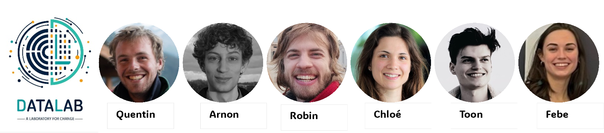

What is DataLab?
The DataLab is a group of young voluntary data experts working together to empower positive change in society through data insights.
Our vision is to harness the power of data to support informed decisions and inspire innovation for the common good. We are dedicated to apply our data expertise to drive lasting positive change and improve our environment and societal well-being for the benefit of all.
Our values: collaboration, transparency, accessibility, open-mindedness, impact- driven.
We are working together in our free time to empower positive change through data insights and we are supported by the King Baudouin Foundation.
Meet some of our team member:
Do you want to join the DataLab? Do you have data skills and want to volunteer for a purposeful project? Contact us at info@thedatalab.be
In 2024, we decided to start with a sustainability project. The group voted for the 3- 30-300 rule because we wanted to bring more knowledge to people about the places they live in. You can find the first beta version of the map here.
Stay tuned for other projects of the DataLab in the future ! Follow us on social media: link to our social media$
Bienvenue au Datalab
Qu'est-ce que le DataLab ?
Le DataLab est un groupe de jeunes data experts bénévoles qui travaillent ensemble pour favoriser un changement positif dans la société grâce à la connaissance des données.
Notre vision est d'exploiter le pouvoir des données pour soutenir des décisions éclairées et inspirer l'innovation pour le bien commun. Nous sommes déterminés à appliquer notre expertise en matière de données pour susciter des changements positifs durables et améliorer notre environnement et le bien-être de la société pour le bénéfice de tous.
Nos valeurs : collaboration, transparence, accessibilité, ouverture d'esprit, impact- driven. Nous travaillons ensemble pendant notre temps libre pour susciter des changements positifs grâce à la connaissance des données et nous sommes soutenus par la Fondation Roi Baudouin.
Rencontrez quelques membres de notre équipe :

Arnon

Chloé

Febe

Quentin

Robin

Toon
Voulez-vous rejoindre le DataLab ? Vous avez des compétences en matière de données et vous souhaitez vous porter volontaire pour un projet utile ? Contactez- nous à l'adresse info@thedatalab.be
En 2024, nous avons décidé de commencer par un projet de développement durable. Le groupe a voté pour la règle des 3-30-300 et nous avons commencé à collaborer avec Greenpeace sur ce projet. Vous pouvez trouver la carte qui en résulte ici.
Restez à l'écoute pour d'autres projets du DataLab dans le futur ! Suivez-nous sur les médias sociaux : lien vers nos médias sociaux
Wat is het DataLab?
Het DataLab is een groep jonge vrijwillige data-experts die samenwerken om positieve verandering in de samenleving mogelijk te maken door middel van data-inzichten.
Onze visie is om de kracht van data in te zetten om geïnformeerde beslissingen te ondersteunen en innovatie te inspireren voor het algemeen belang. We zetten onze data-expertise in om blijvende positieve veranderingen teweeg te brengen en ons milieu en maatschappelijk welzijn te verbeteren ten gunste van iedereen.
Onze waarden samenwerking, transparantie, toegankelijkheid, ruimdenkendheid, impactgericht.
We werken samen in onze vrije tijd om positieve verandering mogelijk te maken door middel van data-inzichten en we worden ondersteund door de Koning Boudewijnstichting.
Ontmoet enkele van onze teamleden:
Wil je je aansluiten bij het DataLab? Heb je datakennis en wil je je als vrijwilliger inzetten voor een doelgericht project? Contacteer ons op info@thedatalab.be
In 2024 besloten we te starten met een duurzaamheidsproject. De groep stemde voor de 3- 30-300 regel omdat we mensen meer kennis wilden geven over de plekken waar ze wonen. Je kunt de eerste bètaversie van de kaart hier vinden.
Blijf kijken voor andere projecten van het DataLab in de toekomst! Volg ons op sociale media: link naar onze sociale media$.